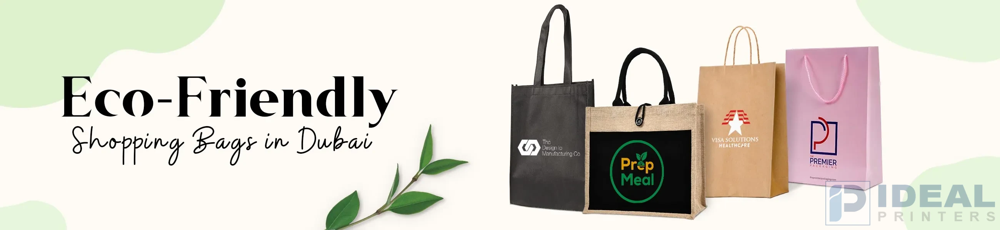

Eco-Friendly Shopping Bags in Lahore: The Game-Changer for Sustainable and Stylish Branding

In a city famous for innovation and luxury, green shopping bags are making a huge impact. These bags are important to consumers and businesses that care about the environment. In Lahore's retail and fashion scene, the adoption of eco-friendly bags is now a must for brands that want to be both stylish and responsible. There are so many types of these bags, including paper, tote, canvas, and kraft bags, and they are changing how brands are viewed in Lahore.
The Rise of Sustainability in Lahore
Lahore is set to become more sustainable, with ongoing efforts to reduce waste and support eco-friendly alternatives. As more and more consumers call for sustainable products, Lahore companies are swiftly changing to address these needs. Sustainable shopping bags are at the forefront, helping brands connect with global trends and local values.
No matter, if you're a small shop in Lahore Mall or a big company wanting to be more eco-friendly, bags made from paper, canvas, or other sustainable materials, are becoming the top choice. These bags are useful for customers and help promote your brand.
Why Eco-Friendly Bags are Important for Branding
- Variety for Each Brand: There are several varieties of green bags available, from Classic paper bags to reusable canvas bags. Tote bags are stylish and reusable, whereas shopping bags made from green materials are functional and long-lasting. The choice of the perfect bag can draw different consumers.
- Good for the Planet and Fashionable: Eco-friendly bags are fashionable and good for the planet. They can also be printed with your logo, making them a great accessory for your clients. No matter what your design style is, the bags can be designed to fit your company.
- Long-Term Brand Visibility: As your customers use your Eco-friendly bags, they promote your brand wherever they go. These bags are long-lasting, giving your brand ongoing visibility in areas with heavy foot traffic.
- A Representation of Modern Values: People today care more about the environment. By offering eco-friendly bags, your business shows that it is concerned with sustainability, which attracts environmentally conscious consumers and encourages loyalty.
Eco-Friendly Bags for Luxury Brands in Lahore
Even though Lahore is equated with luxury, one can also be eco-friendly there. Luxury brands can use fashionable eco-friendly bags to show their commitment to luxury and sustainability. Imagine a luxury store with beautiful Canvas tote bags or paper bags with gold trimmings - such bags speak of quality and concern for the planet.
Luxury brands can use such bags to subtly communicate their values while appealing to consumers who value sustainability.
Maximizing Your Brand with Sustainable Packaging
Environmentally friendly packaging goes beyond bags. Businesses must integrate sustainable choices into all of their packaging to establish a strong brand reputation. From promotional items to custom packaging, sustainable choices can help your brand dazzle.
At Ideal Printers, we offer many eco-friendly printing options, including custom paper, tote, and Jute bags. Our sustainable packaging sets your brand apart while maximizing your green efforts.
Why Ideal Printers for Environmentally Friendly Bags?
Ideal Printers recognizes that branding is building an experience. Our environment-friendly bags are constructed from sturdy, recycled paper and organic cotton, so they're both powerful and responsible. We can help develop bags that connect with your audience and advance your brand.
With Ideal Printers, you can ensure that you're choosing sustainable solutions that meet your branding and sustainability needs.
In Conclusion
Eco-friendly shopping bags are a must for companies wanting to succeed in Lahore. Paper, canvas, or other types, these bags allow your brand to leave a lasting impression and show the world that you care for the environment.
If you're open to improving your brand's green image with custom bags, Ideal Printers can help you create stylish and eco-friendly products. Contact us today to start designing your eco-friendly bags for a sustainable tomorrow!
Let's Create Something Extraordinary!
At Ideal Printers, we're all about turning your ideas into standout, eco-friendly products that reflect your brand's true essence. Whether it's custom shopping bags, luxury packaging, or sustainable promotional items, we're excited to bring your vision to life in a way that's stylish, unique, and eco-conscious.
Got a project in mind? Let's talk! We're just a message away.
Reach out to us today, and let's make your next branding move a game-changer!
- Phone: +92 42 3597 9285
- Email: idealprinter41@gmail.com
- Instagram: Ideal Printers
- Office Location: G-2, Al-Rehman Centre, Shama Metro Station, 70-Ferozepur Road, Lahore